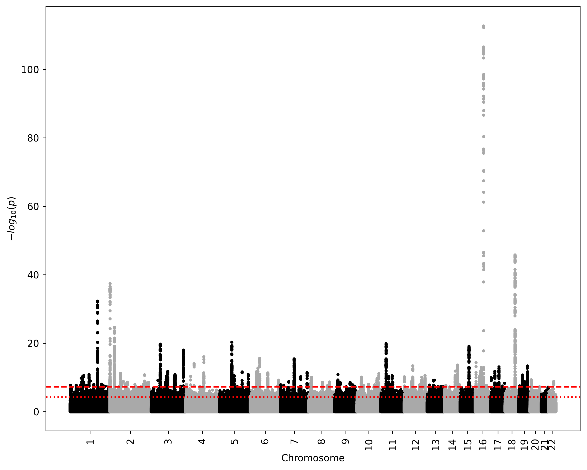
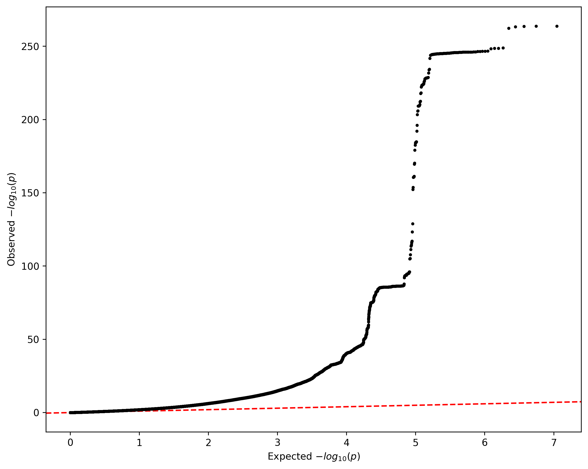
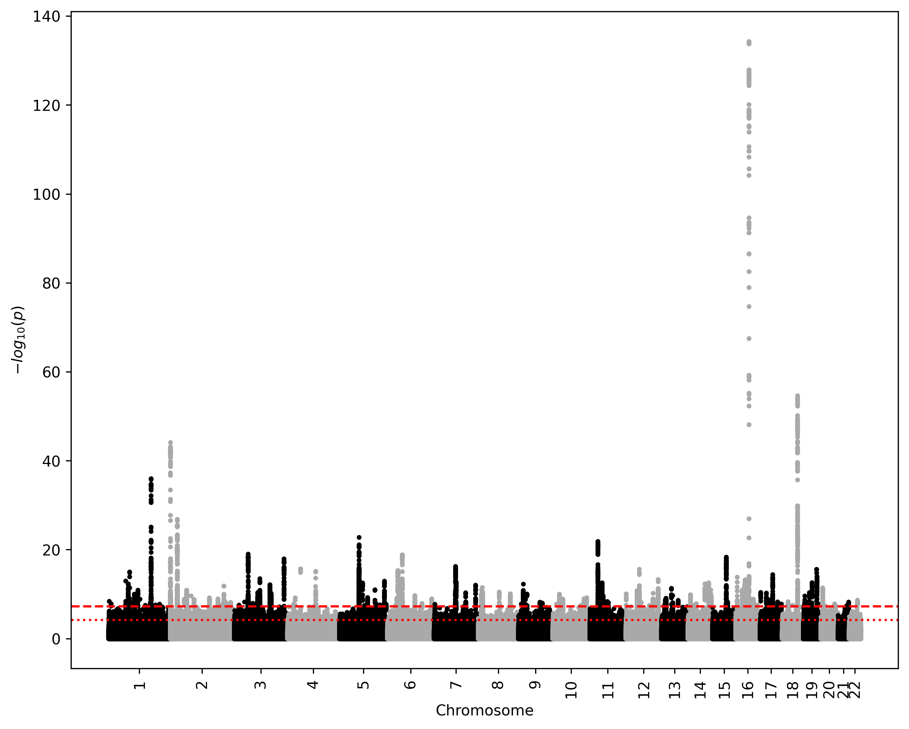
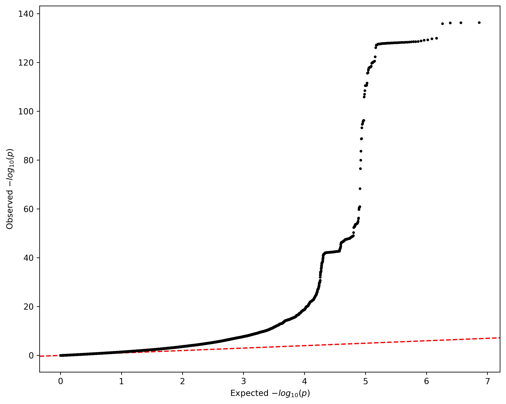

Visualizing results
Once your GWAS is complete, you might want to analyze its summary statistics. Here, we provide code to compute a Manhattan plot and a QQ plot from your results.
Generatating plots
We propose the following code, as a way to see how such plots are made.
Please keep in mind this code is not really optimized, but shoudl run decently quickly on big data. We suggest using other softwares with which you are more familiar, or that you know are faster.
"""Generate Manhattan plot and QQ plot from GWAS summary statistics."""
import numpy as np
import matplotlib.pyplot as plt
def read_results(phenotype, software):
""" Parse GWAS result file and get values.
Parameters
----------
phenotype : str
Phenotype name.
software : str { 'p', 'r'}
Either 'p' for PLINK2 or 'r' for Regenie,
to correctly format the file.
Returns
-------
list
Chromosome numbers.
list
Transformed p-values (-log10).
"""
chroms = []
pvals = []
# Software specific format.
if software == 'p':
chrom_name = "#CHROM"
p_name = "P"
softname = "plink"
elif software == 'r':
chrom_name = "CHROM"
p_name = "LOG10P"
softname = "regenie"
filename = f"{softname}_sumstat_{phenotype}.tsv"
with open(filename, 'r') as glm:
for line in glm:
columns = line.split()
if line.startswith(chrom_name):
chrom_id = columns.index(chrom_name)
p_id = columns.index(p_name)
else:
chroms.append(int(columns[chrom_id]))
if software == 'p':
pvals.append(-np.log10(float(columns[p_id])))
elif software == 'r':
pvals.append(float(columns[p_id]))
return chroms, pvals
def manhattan_plot(chroms, pvals, phenotype, software):
""" Generate Manhattan plot.
Parameters
----------
chroms : list
Chromosome numbers.
pvals : list
Transformed p-values (-log10).
phenotype : str
Phenotype name.
software : str { 'p', 'r'}
Either 'p' for PLINK2 or 'r' for Regenie,
to correctly format the file.
Returns
-------
img
Manhattan plot.
"""
# Software specific format.
if software == 'p':
softname = "plink"
elif software == 'r':
softname = "regenie"
output = f"{softname}_{phenotype}_Manhattan_plot.png"
chrom_distrib = {}
colors = []
for chrom in chroms:
chrom_number = chrom
# Specify color
if chrom_number%2 == 0:
colors.append("darkgray")
else:
colors.append("black")
# Track chromosome number
if chrom_number not in chrom_distrib:
chrom_distrib[chrom_number] = 1
else:
chrom_distrib[chrom_number] += 1
# Plot
plt.figure(figsize=(10, 8), dpi=330)
plt.scatter(range(len(chroms)), pvals, color=colors, s=5)
# Correct x axis
istart = 0
iend = 0
x_ticks = []
x_labels = []
for chrom, number in chrom_distrib.items():
# Update end idx
iend += number
pos = (istart + iend - 1) / 2
x_ticks.append(pos)
x_labels.append(chrom)
# Update start idx
istart = iend
# Plot suggestive and significative thresholds
plt.axhline(-np.log10(5e-5), linestyle="dotted", color="red")
plt.axhline(-np.log10(5e-8), linestyle="dashed", color="red")
# Plot info
plt.xticks(ticks=x_ticks, labels=x_labels, rotation=90)
plt.xlabel("Chromosome")
plt.ylabel("$-log_{10}(p)$")
# Save
plt.savefig(output, bbox_inches="tight")
plt.close()
def qq_plot(pvals, phenotype, software):
""" Generate QQ plot.
Parameters
----------
pvals : list
Transformed p-values (-log10).
phenotype : str
Phenotype name.
software : str { 'p', 'r'}
Either 'p' for PLINK2 or 'r' for Regenie,
to correctly format the file.
Returns
-------
img
QQ plot.
"""
# Software specific format.
if software == 'p':
softname = "plink"
elif software == 'r':
softname = "regenie"
output = f"{softname}_{phenotype}_QQ_plot.png"
# Sort p-values
pvals.sort(reverse=True)
# Expected values
n = len(pvals)
exp = -np.log10(np.arange(n, dtype=float) / n)
# Plot
plt.figure(figsize=(10, 8), dpi=330)
plt.axline((0, 0), slope=1, color="red", linestyle="dashed", zorder=0)
plt.scatter(exp, pvals, color="black", s=5, zorder=10)
plt.xlabel("Expected $-log_{10}(p)$")
plt.ylabel("Observed $-log_{10}(p)$")
# Save
plt.savefig(output, bbox_inches="tight")
plt.close()
# Input
PHENOTYPE = "BMI"
SOFTWARE = 'p' # for PLINK2 or 'r' for Regenie
# Read values
CHROMS, PVALS = read_results(PHENOTYPE, SOFTWARE)
# Manhattan Plot
manhattan_plot(CHROMS, PVALS, PHENOTYPE, SOFTWARE)
# QQ plot
qq_plot(PVALS, PHENOTYPE, SOFTWARE)
This command outputs 2 files:
<software>_BMI_Manhattan_plot.png(~190 Ko) contains the Manhattan plot for the whole GWAS<software>_BMI_QQ_plot.png(~ 110 Ko) contains the QQ plot for the whole GWAS
This script should take between 5 and 10 minutes to compute both plots.
Expected plots
PLINK2
By the end of this tutorial, when using PLINK2, you should obtain the following Manhattan plot:

And the following QQ plot:

Regenie
By the end of this tutorial, when using Regenie, you should obtain the following Manhattan plot:

And the following QQ plot:
